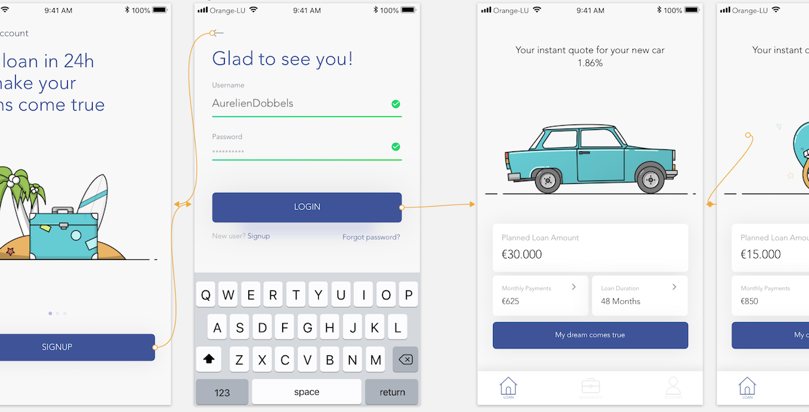

About Us
North incubates and invests in financial technology companies, providing operational support and help to scale internationally. Our ventures are active in a large number of countries around the world.
Contact Us
Contact Info
- 14 Porte de France 4360 Esch/Alzette
- (352) 661-14-24-31
- Hello@North.com
- Innovation never sleeps!

View prototype
View prototype

Business case
24
Value Proposition
Loan offers when needed, not several days/weeks later.
Targets
Borrowers
Problem
There is no FICO credit score in Europe.
Run a credit check and assess the credit worthiness of a customer is time consuming.
It takes time to let customers know whether then can borrow or not the money they need.
FICO score
Investopedia defines FICO score as “a type of credit score created by the Fair Isaac Corporation. Lenders use borrowers' FICO scores along with other details on borrowers' credit reports to assess credit risk and determine whether to extend credit. FICO scores take into account various factors in five areas to determine credit worthiness: payment history, current level of indebtedness, types of credit used, length of credit history and new credit accounts.”
Solution
Thanks to open banking, we ask customers to provide us with a connection to their bank accounts so that we can perform the assessment of their credit worthiness. We would have access to the following information: loans, credit card, mortgage, joint accounts that are open.
From this data, we perform an analysis (cash flow, good months and bad months), we determine what their typical income and expenses are, and we compute a FICO score like.
We compare their financial capabilities with their project.
Based on that, customers will either be declined or granted the loan / mortgage.
In a second time, this model should be applied to businesses as well.
Mockup
Here is a mockup that has been done within 8h. Based on a lean startup mindset, I wanted to demo an App that could be done within a short notice period and that could be tested easily, with a very limited budget. We should first start with loans and then, in a second stage, assess the opportunity to extend this offer to mortgages. This MVP should first be considered as a lead generator and then should be enhanced over time.
Authentication: In the first instance, no authentication needed (only email + password) as the lead will just have a pre-approval. No engagement from BIL
Pre-approval agreement: It should be based on the information customers provide us with. Based on this data and on our own criteria (expense/income ratio, type of labor contract, country of residence etc), we can instantly pre-approve any loan. This is just an “if” waterfall.
No algorithm: instead of developing a complex algorithm that would assess credit worthiness of a customer thanks to open banking (standalone and longer term project), all the requests can be analyzed by an employee who works in credit department. He would just receive an email with the information and documents he needs.
Approval: if all the documents uploaded by the customers are consistent with the information he provided us with for the pre-approval, employee should be able to validate customer requests in a short notice period (<24h).
Once a loan has been granted by credit department, there are 3 possible alternatives:
1. We ask the customer to open an account within a branch
2. We ask the customer to open an account within BILnet App
3. The lead doesn’t open any account with BIL, and BIL would transfer the proceeds to the customers’ bank (as Younited Credit is currently operating).
If not approved, customers are instantly informed.
From the development side, no major issue. The “bot” is just an interactive form, no AI behind.
Business Model
• Yearly recurring revenue through interest margin (1.50% to 2.75% margin depending on loan tenor)
• A 100% digitalized loan process involves savings
• White labelling so that retailers offer this service to their customers (furniture stores, interior designers, car dealerships etc)
• SAAS business model: i) Sell our “24h loan” technology to other counterparts, ii) Sell our credit scoring technology to other counterparts.
Synergies with BIL MVP teams
XCCX
Along with XCCX, Lab should be charge to develop this feature. Lab should be in charge of the service design and then help XCCX to develop the feature.
PSD2
This project could be considered as a TPP, Third Party Provider, for PSD2 team. We could easily display the credit line within the App and test it in real market environment with another brand (see above the benefits).
CBS
If the project were part of a standalone brand, we could test T24 before it goes live.
Data
In order to perform a FICO score we would need the help of “Advanced Analytics & Data Governance” team in order to analyze a large amount of data.
Hello@North.com
+352 661 14 24 31
+352 661 14 24 31
© Copyright 2018 North. All Rights Reserved